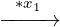
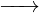

| Up | Next | Prev | PrevTail | Tail |
Authors: Yuri A. Blinkov and Mikhail V. Zinin
Involutive polynomial bases are redundant Gröbner bases of special structure with some additional useful features in comparison with reduced Gröbner bases [GB98]. Apart from numerous applications of involutive bases [Sei10] the involutive algorithms [Ger05] provide an efficient method for computing reduced Gröbner bases. A reduced Gröbner basis is a well-determined subset of an involutive basis and can be easily extracted from the latter without any extra reductions. All this takes place not only in rings of commutative polynomials but also in Boolean rings.
Boolean Gröbner basis already have already revealed their value and usability in practice. The first impressive demonstration of practicability of Boolean Gröbner bases was breaking the first HFE (Hidden Fields Equations) challenge in the public key cryptography done in [FJ03] by computing a Boolean Gröbner basis for the system of quadratic polynomials in 80 variables. Since that time the Boolean Gröbner bases application area has widen drastically and nowadays there is also a number of quite successful examples of using Gröbner bases for solving SAT problems.
During our research we had developed [GZ08b, GZ08a, GZB10] Boolean involutive algorithms based on Janet and Pommaret divisions and applied them to computation of Boolean Gröbner bases. Our implementation of both divisions has experimentally demonstrated computational superiority of the Pommaret division implementation. This package BIBASIS is the result of our thorough research in the field of Boolean Gröbner bases. BIBASIS implements the involutive algorithm based on Pommaret division in a multivariate Boolean ring.
In section 2 the Boolean ring and its peculiarities are shortly introduced. In section 3 we briefly argue why the involutive algorithm and Pommaret division are good for Boolean ring while the Buhberger’s algorithm is not. And finally in section 4 we give the full description of BIBASIS package capabilities and illustrate it by examples.
Boolean ring perfectly goes with its name, it is a ring of Boolean functions of n variables, i.e mappings from {0,1}n to {0,1}n. Considering these variables are X := {x1,…,xn} and 𝔽2 is the finite field of two elements {0,1}, Boolean ring can be regarded as the quotient ring
| 𝔹[X] := 𝔽2[X]∕ < x12 + x 1,…,xn2 + x n > . |
Multiplication in 𝔹[X] is idempotent and addition is nilpotent
| ∀b ∈ 𝔹[X] : b2 = b, b + b = 0. |
Elements in 𝔹[X] are Boolean polynomials and can be represented as finite sums
| ∑ j ∏ x∈Ωj⊆Xx |
of Boolean monomials. Each monomial is a conjunction. If set Ω is empty, then the corresponding monomial is the unity Boolean function 1. The sum of zero monomials corresponds to zero polynomial, i.e. is zero Boolean function 0.
Detailed description of involutive algorithm can found in [Ger05]. Here we note that result of both involutive and Buhberger’s algorithms depend on chosen monomial ordering. At that the ordering must be admissible, i.e.
| m≠1⇔m ≻ 1, m1 ≻ m2⇔m1m ≻ m2m ∀ m,m1,m2. |
But as one can easily check the second condition of admissibility does not hold for any monomial ordering in Boolean ring:
|
x1 ≻ x2  x1 ∗ x1 ≻ x2 ∗ x2 x1 ≺ x1x2 |
Though 𝔹[X] is a principal ideal ring, boolean singleton {p} is not necessarily a Gröbner basis of ideal < p >, for example:
| x1,x2 ∈ < x1x2 + x1 + x2 >⊂ 𝔹[x1,x2]. |
That the reason why one cannot apply the Buhberger’s algorithm directly in a Boolean ring, using instead a ring 𝔽2[X] and the field binomials x12 + x1,…,xn2 + xn.
The involutive algorithm based on Janet division has the same disadvantage unlike the Pommaret division algorithm as shown in [GZ08b]. The Pommaret division algorithm can be applied directly in a Boolean ring and admits effective data structures for monomial representation.
The package BIBASIS implements the Pommaret division algorithm in a Boolean ring. The first step to using the package is to load it:
The current version of the BIBASIS user interface consists only of 2 functions: bibasis and bibasis_print_statistics.
The bibasis is the function that performs all the computation and has the following syntax:
| bibasis( | ⟨initial_polynomial_list⟩,⟨variables_list⟩, | |
| ⟨monomial_ordering⟩,⟨reduce_to_groebner⟩); |
Input:
See Examples 2–4 to check that Gröbner (as well as involutive) basis depends on monomial ordering.
Output:
The syntax of bibasis_print_statistics is simple:
bibasis_print_statistics();
This function prints out a brief statistics for the last invocation of bibasis function. See Example 7.
Example 1:
Example 2:
Example 3:
Example 4:
Example 5:
Example 6:
Example 7:
| Up | Next | Prev | PrevTail | Front |